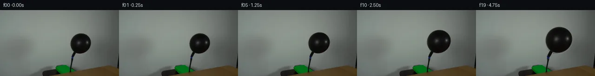

![首帧]()

Round 00
2026-11-04T21:56:32.069758+00:00像素候选变化代码 +186/−0inspection 更新
pixels 84b0c0f8627b5474 · code f19808717ee88846
查看本轮 generate.py 真实 diff
--- previous/generate.py
+++ current/generate.py
@@ -0,0 +1,186 @@
+#!/usr/bin/env python3
+"""Generate a 20-frame, image-space balloon inflation sequence."""
+
+from pathlib import Path
+
+import numpy as np
+from PIL import Image, ImageDraw, ImageFilter
+
+from artifact_io import save
+
+
+ROOT = Path(__file__).resolve().parent
+WIDTH, HEIGHT = 256, 144
+ANCHOR = (158.0, 101.0) # tied neck; remains fixed while the envelope expands
+
+
+def smoothstep(value: float) -> float:
+ value = min(1.0, max(0.0, value))
+ return value * value * (3.0 - 2.0 * value)
+
+
+def connected_component(binary: np.ndarray, seed_xy: tuple[int, int]) -> np.ndarray:
+ """Return the 4-connected component containing seed_xy."""
+ h, w = binary.shape
+ sx, sy = seed_xy
+ result = np.zeros_like(binary, dtype=bool)
+ if not binary[sy, sx]:
+ raise ValueError("The balloon segmentation seed is not foreground")
+ stack = [(sx, sy)]
+ result[sy, sx] = True
+ while stack:
+ x, y = stack.pop()
+ for nx, ny in ((x - 1, y), (x + 1, y), (x, y - 1), (x, y + 1)):
+ if 0 <= nx < w and 0 <= ny < h and binary[ny, nx] and not result[ny, nx]:
+ result[ny, nx] = True
+ stack.append((nx, ny))
+ return result
+
+
+def balloon_matte(source: np.ndarray) -> Image.Image:
+ """Extract the dark balloon and its knot, excluding the hose below it."""
+ luma = (
+ 0.2126 * source[:, :, 0]
+ + 0.7152 * source[:, :, 1]
+ + 0.0722 * source[:, :, 2]
+ )
+ candidate = np.zeros((HEIGHT, WIDTH), dtype=bool)
+ # The local wall is well above this threshold; the black envelope is below it.
+ candidate[47:105, 146:201] = luma[47:105, 146:201] < 91.0
+ component = connected_component(candidate, (174, 74))
+
+ # Add a controlled one-pixel collar so the photographed anti-aliased boundary
+ # remains part of the moving object, then soften only that outer matte edge.
+ matte = Image.fromarray((component.astype(np.uint8) * 255), mode="L")
+ matte = matte.filter(ImageFilter.MaxFilter(3)).filter(ImageFilter.GaussianBlur(0.42))
+ return matte
+
+
+def affine_about_anchor(scale_x: float, scale_y: float) -> tuple[float, ...]:
+ """Pillow inverse affine coefficients for scaling about the fixed neck."""
+ ax, ay = ANCHOR
+ return (
+ 1.0 / scale_x,
+ 0.0,
+ ax - ax / scale_x,
+ 0.0,
+ 1.0 / scale_y,
+ ay - ay / scale_y,
+ )
+
+
+def transform_premultiplied(
+ premultiplied: np.ndarray, matte: Image.Image, scale_x: float, scale_y: float
+) -> tuple[np.ndarray, np.ndarray]:
+ """Warp premultiplied RGB plus alpha to avoid dark/bright resampling fringes."""
+ coeffs = affine_about_anchor(scale_x, scale_y)
+ channels = []
+ for channel in range(3):
+ image = Image.fromarray(premultiplied[:, :, channel], mode="L")
+ warped = image.transform(
+ (WIDTH, HEIGHT), Image.Transform.AFFINE, coeffs,
+ resample=Image.Resampling.BICUBIC, fillcolor=0,
+ )
+ channels.append(np.asarray(warped, dtype=np.float32))
+ warped_alpha = matte.transform(
+ (WIDTH, HEIGHT), Image.Transform.AFFINE, coeffs,
+ resample=Image.Resampling.BICUBIC, fillcolor=0,
… diff truncated; 99 more lines …